Бабха, озеро, водопад (17 июня 2007)
|
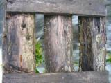 Субботний
проливной дождь заставил посидеть дома, а вот в воскресенье обещали
хорошую переменную облачность, так что решил провести разведку
новой для себя местности. Одним днем и в одну каску.
Тропа вдоль речки Бабхи хоть и завалена деревьями после снегопада
2 июня, но все равно позволяет почти бежать по ней. Ребята из
клуба "Большая Байкальская тропа" в прошлом году ее
капитально отреставрировали, спасибо им. Длинный и надежный мостик
через Бабху, поворот направо - и про бег можно забыть, начинается
лазание через прижимы и прыжки по камням. В одном месте даже лестница
сколочена, чтобы со скалы спуститься :) В одном месте заплутал
и вышел на небольшое зимовье. А тропа в цирк Бабхи начинается
перед вторым ручьем после моста. Круто забирает вверх и особенно
не дает расслабиться. Я бы сказал, что тропа из сложных. Правда,
когда с нее собьешься и пошаришься зарослях стланика, в этих джунглях
Хамар-Дабана, то и такая тропа покажется асфальтовой дорогой :)
|
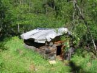 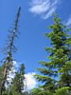 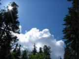 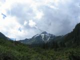
Тропа выводит в цирк, который встречает большой поляной, по ней
медленно течет ручей с широкими купальными разливами. Во всей красе
видна гора Бабха, крутые скальные сбросы, все еще много снежников.
Дальше немного через горку каменных глыб и открывается просто обалденный
вид - под горой большое изумрудное озеро и многоступенчатый водопад!
Действительно, одно из красивейших мест! |
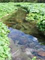  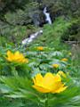 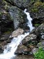
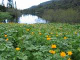 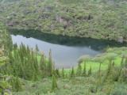 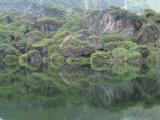
|
Побродил вокруг, по фотографировал. Как гласит местная легенда,
на берегу озера ценители красоты из Байкальска и Слюдянки построили
зимовье с баней, дабы по выходным поправлять здоровье физическое
и духовное. Однако вскоре толпы людей неразумных заполонили это
красивое место и хозяин горы (в образе злого охотника) сжег до
тла все постройки :)
До вершины горы примерно оставалось часа 2-3 максимум, но такой
цели я на сегодня не ставил, да и погода начала меняться в дождливую
сторону. Даже лучше - в грозовую сторону с градом! Переждал локальную
катаклизму под скалой с забавными рисунками, заодно и пообедал.
Возвращение по той же тропе было легким, но мокрым.
|
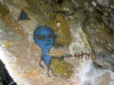 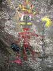 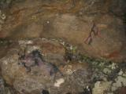
Июнь 2007
Алексей Белокрылов
Фотографии автора :)
|